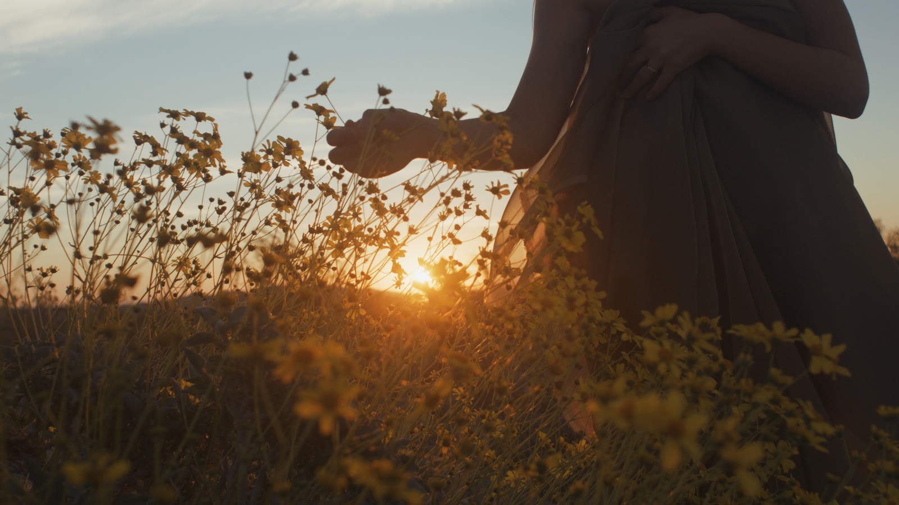

Therapeutic StudioCreative health
Most days someone asks how I am, and the words I have are too small. Fine. Tired. Not great. Each is true, and none of them is the shape of what I’m carrying.
Other Bodies began as a deck of 52 feelings, each paired with a natural body. The tools here grew out of it, one question at a time. A name wasn’t enough, so I wanted to see which feelings travel together. Then where a feeling sits. Then what shape it has. Then how it turns into the next one. They are for the moment before I pick up a brush, when something is there and I can’t yet say what it is or where.
Five ways in
Each holds the same 52 feelings and asks a different question of them.
What is this feeling, and what keeps it company?
Fifty-two creative care prompts in ten feeling constellations, each pairing a feeling with a natural body.
Which feelings travel together?
The deck as a night sky. Each star is a card; each constellation gathers feelings that move through the body in a similar way.
Where does this feeling sit?
The same feelings in a space you can turn: still to activated, inward to outward, contracted to permeable.
What shape is it?
A landscape for each feeling, built from nine qualities I observed in it. Move through one and stay inside the shape.
How does one feeling become another?
Five stories, ten feelings each, following erosion, germination, metamorphosis, succession and the tide.
Names in pencil. The neuroscientist Lisa Feldman Barrett’s research suggests the brain builds a feeling in the moment, out of bodily sensation and the concepts it has to hand, rather than finding one already there. So the names on these cards are offers, not labels. Borrow one, or put it back.
More than one direction. Psychology has long described feeling along a few dimensions rather than as separate boxes, and how activated you are is one of the most common. The Emotion Space keeps activation. Orientation and permeability are mine: they came from paying attention in the studio, not from a study.
Observed, not measured. Where each feeling sits in the Emotion Space, and the nine qualities behind each landscape, are my own observations and interpretations. Yours may differ, and that isn’t a mistake. The tools show one person’s reading so you have something to read against.
Feelings move. Many of us live with states that come and go on schedules we don’t set. The stories are there so a feeling can be seen as part of a passage, not a place you’re stuck.
Company, not answers. A natural body doesn’t explain a feeling. It gives you something to sit beside that has lived with something like it for far longer than we have, and asks nothing of you.
Before I make anything, I spend a minute with one of the tools. Not to diagnose the day, only to find it. Then I pick up the brush and let the watercolour do what it does.
On YouTube I share short practice sessions: watercolour blobs made alongside the deck. And every second Saturday, from 14 November 2026 to 30 October 2027, I write about one feeling and its companion on Make Space, the Therapeutic Studio blog.
The deck
Fifty-two prompts, for feelings that need a companion rather than an answer. Draw a card at random, or choose the constellation closest to how you feel. Keep one beside you for a day, draw one for a session, or draw one for someone you care about. Each asks you to make something honest rather than polished. Watercolour suits it, because it won’t be fully controlled, but use whatever you have.
The deck is free for personal use. For professional or organisational use, please get in touch first.
Download the deck Get in touch
What these tools are not. They are not tests. They haven’t been validated, they don’t measure anything about you, and they can’t tell anyone what you feel. They are ways into making.
Other Bodies is a creative health practice, not therapy. Nothing here is a treatment, an assessment, or clinical advice. If you are in distress, please reach someone who can help now: in British Columbia, 310-6789 (no area code); anywhere in Canada, call or text 9-8-8.
Sources